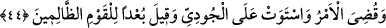

Kenan’ın kulağı bu sözleri nasıl duyacak?
Çünkü bu kulakları Allah mühürlemiştir.
Sonunda sen de bunu ikrar ve idrak edeceksin ya
Bari kendine gel de son günü, yâni âhireti bugünden gör.
Sonu gören mes‘ûd olur.
Hak yolunda yürürken hiç bir zaman ayağı sürçmez.
Her an ayağının kaymamasını, sürçmemesini istiyorsan,
Kâmil insanın ayak toprağını gözüne sürme olarak çek.
Hâfız şöyle der:
Allah adamlarına yar ol ki Nuh’un gemisinde
Aslı topraktan olan öyleleri vardır ki tufanı bir su saymaz
Bu konuya uygun düşen nüktelerden birisi de Hüsrev Dihlevî’nin şu şiiridir:
Şehâdet deryasından timsah gibi “lâ” lafzı yukarı baş kaldırınca
Nuh (a.s.)’a tufan vaktinde teyemmüm farz olur
Hüsrev Dihlevî’nin: “Şehâdet deryasından” sözü, mü’minlerin “Eşhedü (şehâdet
ederim ki)” sözleridir. “Timsah gibi “lâ” lafzı yukarı baş getire” sözü, “lâ”nın
yükselmesidir. “Teyemmüm”den maksad ise iki vuruş; “illa” ve “Allah” vuruşudur.
Nûh’dan maksad lisan, ağızdan maksad ise gemidir. Onun tûfânından maksad, “La
ilâhe illallah” sözünü telâffuzudur. “Eşhedü en lâ ilâhe illallah” dediği zaman, “lâ” harfi
şehâdet denizinden başını kaldırır ve tûfan dil üzerinde meydana gelir. İşte o zaman
kişiye yukarıdaki iki vuruş vâcib olur. Bu iki vuruşu yaptığı zaman kurtulur. Yapmayıp
bir süre beklediği zaman ise tufan denizinde boğulur. Çünkü bu duruş, inkâr demektir.
Fusûs şârihi Sofyalı Hz. Şeyh Bâlî şiiri bu şekilde şerh etmiştir.
44. “Ey yer suyunu yut ve ey gök (suyunu) tut!” denildi. Su çekildi, iş bitirildi.
Gemi Cûdî’ye oturdu. “Haksızlık yapan kavim yok olsun!” denildi.
“Ey yer”; tûfan yerden başladığı için gökten önce yere emir verildi. “suyunu”
yeryüzündeki pınar ve nehirlerde bulunan suları değil de tufan suyunu “yut.”
Buradaki “yut”, “em” mânâsındadır. Çünkü yutmanın gerçek mânâsı, çekerek yemeği
boğaza sokmaktır. Âyette ise suyun toprağa girmesi mânâsında istiâre olarak
kullanılmıştır. Aradaki benzerlik yönü (vech-i şebeh) ise ‘gizli bir yere gidiş’tir. Âyette